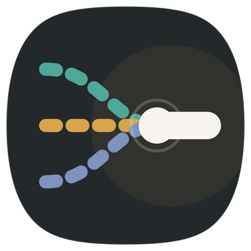

Connecting to the Windows app…
File links and direct media show an on-page Plexo button. Downloads that a site refuses to send to Plexo stay in your browser.
Install the Plexo Windows app first. Closing its window keeps downloads running in the system tray. Use its tray menu to quit.
DRM, HLS/DASH playlists, blob videos, and sites requiring interactive challenges cannot be transferred.